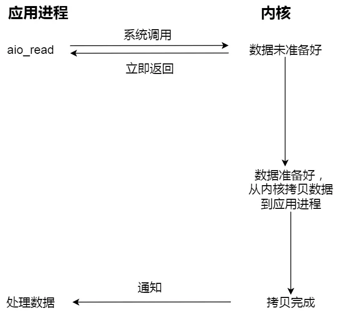

阻塞和非阻塞，同步、异步I/O
阻塞和非阻塞，同步和异步是描述I/O操作行为的两组概念，从不同的角度买哦输了程序如何处理任务和数据传输。
阻塞和非阻塞
阻塞I/O（Blocking）
当用户程序执行read时，线程会被阻塞，一直等到内核数据准备好，并把数据从内核缓冲区拷贝到应用程序缓冲区中，当这两个过程完成read才会返回。

- 特点：
- 程序在执行 I/O 操作时会挂起，无法执行其他任务。
- 简单易用，适合单任务场景。
非阻塞I/O(Non-blocking)
非阻塞的read请求在数据为准备好的情况下会立刻返回，可以继续向下执行，此时应用程序会不断轮询内核，直到数据准备好，内核将数据拷贝到应用程序缓冲区，read调用才可以获取到结果。

注意：这里的最后一次read调用获取数据的过程，是一个同步的过程，是需要等待的过程。
- 特点：
- 程序不会挂起，可以继续执行其他任务。
- 需要轮询或事件驱动机制来检查操作是否完成。
- 适合多任务或高并发场景。
同步和异步
同步
程序发起一个 I/O 操作后，必须等待操作完成才能继续执行后续代码。
这里的等待指的是从内核缓冲区将数据拷贝到应用程序的过程，无论read或send是阻塞I/O还是非阻塞I/O，都是同步的过程。
异步
程序发起一个 I/O 操作后，不需要等待操作完成，而是通过回调、信号或事件通知机制在操作完成后得到通知。
真正的异步I/O是内核数据准备好和数据从内核缓冲区拷贝到应用程序缓冲区的过程都不需要等待。
调用 aio_read()（异步I/O） 读取数据时，程序会立即返回，数据到达后通过回调函数通知程序。
